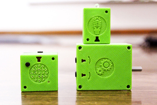
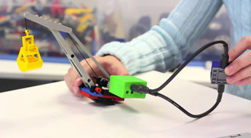
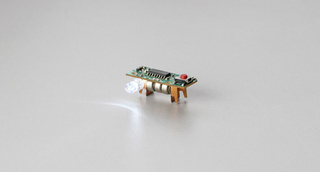

Mon, 19 Nov 2012 19:14:36 GMT
Toshiba Satellite L955D es el primero con AMD Fusion 'ULV'
Toshiba Satellite L955D es el primero con AMD Fusion 'ULV'
El Toshiba Satellite L955D-108 se presenta estos días y, a pesar de que en una primera impresión podría parecer un portátil bastante normal, en la realidad incluye una novedad realmente representativa. Si buscamos en sus tripas nos encontraremos con que se trata del primer portátil ‘ultraligero’ con AMD Fusion ‘ULV’, tal y como lo cataloga Toshiba en la información oficial. En la realidad nos encontraremos con que efectivamente Toshiba Satellite L955D tiene buenas medidas, si bien no son las mejores del panorama actual: un grosor de 2.4 centímetros y un peso total de unos 2.2 kilogramos. Si bien lo más representativo es ese procesador AMD Fusion A6-4455 ‘ULV’ con un TDP de sólo 17 vatios, éste va acompañado de gráficos integrados AMD 7500G y 4 GB de memoria RAM DDR3. No es una cifra alta si no bastante corriente, al igual que la pantalla de 15.6 pulgadas y una resolución un tanto escasa, 1.366×768 píxeles. Dado el hardware Toshiba Satellite L955D esperamos una potencia bastante decente incluyendo algunos videojuegos de exigencia media, pero sobre todo una autonomía bastante amplia que, según las cifras oficiales, alcanza las 6.5 horas mediante una batería de 4 celdas. Una vez más no se trata de las mejores cifras del mercado pero sí un dato bastante aceptable. Toshiba no ha mencionado el precio de su nuevo juguete de forma oficial, pero entendemos que entra dentro de una gama media y que saldrá por entre 500 y 600 euros en España. Más información | Toshiba.
El Toshiba Satellite L955D-108 se presenta estos días y, a pesar de que en una primera impresión podría parecer un portátil bastante normal, en la realidad incluye una novedad realmente representativa.
Si buscamos en sus tripas nos encontraremos con que se trata del primer portátil ‘ultraligero’ con AMD Fusion ‘ULV’, tal y como lo cataloga Toshiba en la información oficial. En la realidad nos encontraremos con que efectivamente Toshiba Satellite L955D tiene buenas medidas, si bien no son las mejores del panorama actual: un grosor de 2.4 centímetros y un peso total de unos 2.2 kilogramos.
Si bien lo más representativo es ese procesador AMD Fusion A6-4455 ‘ULV’ con un TDP de sólo 17 vatios, éste va acompañado de gráficos integrados AMD 7500G y 4 GB de memoria RAM DDR3. No es una cifra alta si no bastante corriente, al igual que la pantalla de 15.6 pulgadas y una resolución un tanto escasa, 1.366×768 píxeles.
Dado el hardware Toshiba Satellite L955D esperamos una potencia bastante decente incluyendo algunos videojuegos de exigencia media, pero sobre todo una autonomía bastante amplia que, según las cifras oficiales, alcanza las 6.5 horas mediante una batería de 4 celdas. Una vez más no se trata de las mejores cifras del mercado pero sí un dato bastante aceptable.
Toshiba no ha mencionado el precio de su nuevo juguete de forma oficial, pero entendemos que entra dentro de una gama media y que saldrá por entre 500 y 600 euros en España.
Más información | Toshiba.
Mon, 19 Nov 2012 16:00:39 GMT
Nintendo Wii U
Nintendo Wii U
La Wii U llega el 30 de noviembre a España tras haberse agotado en sus lanzamientos en Japón y Estados Unidos. Como suele pasar en estas ocasiones, la nueva consola de Nintendo ha suscitado todo tipo de opiniones a favor y en contra. ¿Merece realmente la pena hacernos con una Wii U? Para ayudar a esclarecer un poco esa pregunta, aquí os ofrecemos un repaso exhaustivo a las especificaciones de hardware de la Wii U, desde la propia consola hasta su peculiar mando con pantalla táctil y sus posibilidades como reproductor multimedia o centro de conexión a internet. Wii U. La consola por fuera En apariencia, la Wii U es como una versión más regordeta y redondeada de la Wii original. Sus medidas son de 17.2 × 26.8 × 4.6 centímetros y su peso de 1.6 kilos. Aunque se trata de una consola de sobremesa, son unas cifras muy asequibles para llevarla a casa de amigos de forma cómoda. Disponible en negro y blanco brillante, la consola tiene dos grupos de conexiones. El primero está en el frontal, bajo la unidad óptica y protegido por una tapa. Ahí encontramos dos USB 2.0 y una ranura para tarjetas SD o SDHC de hasta 32GB. La consola tiene una memoria interna de 8 o 32GB según modelo, pero los datos de juegos pueden guardarse en medios de almacenamiento masivo como memorias USB, discos duros o tarjetas SD conectadas a estos puertos. El segundo grupo de conexiones está en la parte posterior y consisten en HDMI, otros dos USB 2.0, salida de audio vídeo, RGB y Euroconector. Salvo el HDMI, todas estas salidas son propietarias de Wii / Wii U. Hace falta el cable correspondiente de Nintendo o un adaptador para utilizarlas. Hardware y conexiones Hasta que los ingenieros de AnandTech no han hecho la autopsia completa a una Wii había muchos detalles que no se conocían con precisión. De todos modos, las especificaciones técnicas son una cosa y otra muy distinta es el rendimiento en videojuegos, algo que sólo veremos con el tiempo y los análisis. En lo que a cifras se refiere, la Wii U se mueve gracias a un procesador IBM Power PC multinúcleo de 45 nanómetros. Lo acompaña una gráfica AMD probablemente basada en la arquitectura de las RV7 y adaptada para la ocasión. La memoria del sistema es de 2GB y la de almacenamiento, como hemos comentado, de 8 o 32GB según la versión y con una parte de esta capacidad ocupada por el sistema operativo de la consola. En cuanto al lector de discos ópticos, la Wii utiliza un formato propio retrocompatible con los de la Wii original y con una capacidad de 25GB en cada disco. Los juegos serán también descargables en muchos casos. A nivel de conexiones, la Wii U no ofrece Ethernet. Su enlace con internet es una conexión WiFi n y, si queremos cable tenemos que hacernos con un adaptador USB-Ethernet propietario y sacrificar un puerto. La conexión con el mando Wii U GamePad se realiza mediante una conexión Miracast dedicada que garantiza una buena fluidez en la transmisión de vídeo entre ambos dispositivos. El resto de mandos se conectan de igual manera que en la Wii original y, de hecho, son compatibles con Wii U todos ellos desde el Nunchuck a la Balance Board. La Wii U consume en torno a los 30 vatios a pleno funcionamiento, ya sea reproduciendo un vídeo en streaming o jugando a un título en disco óptico. En reposo consume apenas 0.22 vatios. El mando Wii U GamePad La estrella de la Wii U es su mando Wii U GamePad, un dispositivo que combina los mandos físicos y botones tradicionales con una pantalla táctil 16:9 de 6.2 pulgadas y resolución 854 × 480 píxeles para una densidad de píxel de 158 ppp. El mando se alimenta de una batería de 1.500 mAh que, según los primeros test, dura en torno a las cuatro horas. El GamePad integra dos joysticks analógicos, cuatro gatillos inferiores, botones de acción, start, y select, y una cruceta de dirección. Aparte de estos clásicos, encontramos un control de volumen, toma de auriculares y altavoces integrados y un botón dedicado para la aplicación de TV. El GamePad integra también una cámara frontal de 1.3 megapíxeles utilizable en los propios juegos y una ranura posterior que esconde el stylus para la pantalla táctil. El mando cuenta con acelerómetros sensibles al movimiento y hasta conexión NFC que suponemos será aprovechada en distintos juegos. El GamePad mide 135 milímetros de alto y 23 de grosor, y su peso de es 500 gramos. Aparte del GamePad, la otra novedad en el apartado de mandos es el Wii U Pro Controller, un dispositivo que se vende aparte similar en estética al mando de la Xbox 360 y pensado para el juego más tradicional. Los mandos originales de Wii y los Wii Plus permanecen inalterados y pueden utilizarse con la Wii U. Wii U. Versiones y precio La Wii U llega el 30 de noviembre a España en dos versiones. La básica es blanca e integra una memoria interna de 8GB a un precio de 299 euros. La versión Premium de Wii U sube la memoria interna hasta los 32GB. Además, su paquete de venta añade un soporte de mesa para posar el Wii U GamePad, una base de carga para el mando, y unos soportes para poner la consola en vertical. El precio de la versión Premium es de 349 euros. Más información | Nintendo España
La Wii U llega el 30 de noviembre a España tras haberse agotado en sus lanzamientos en Japón y Estados Unidos. Como suele pasar en estas ocasiones, la nueva consola de Nintendo ha suscitado todo tipo de opiniones a favor y en contra. ¿Merece realmente la pena hacernos con una Wii U?
Para ayudar a esclarecer un poco esa pregunta, aquí os ofrecemos un repaso exhaustivo a las especificaciones de hardware de la Wii U, desde la propia consola hasta su peculiar mando con pantalla táctil y sus posibilidades como reproductor multimedia o centro de conexión a internet.
Wii U. La consola por fuera
En apariencia, la Wii U es como una versión más regordeta y redondeada de la Wii original. Sus medidas son de 17.2 × 26.8 × 4.6 centímetros y su peso de 1.6 kilos. Aunque se trata de una consola de sobremesa, son unas cifras muy asequibles para llevarla a casa de amigos de forma cómoda.
Disponible en negro y blanco brillante, la consola tiene dos grupos de conexiones. El primero está en el frontal, bajo la unidad óptica y protegido por una tapa. Ahí encontramos dos USB 2.0 y una ranura para tarjetas SD o SDHC de hasta 32GB. La consola tiene una memoria interna de 8 o 32GB según modelo, pero los datos de juegos pueden guardarse en medios de almacenamiento masivo como memorias USB, discos duros o tarjetas SD conectadas a estos puertos.
El segundo grupo de conexiones está en la parte posterior y consisten en HDMI, otros dos USB 2.0, salida de audio vídeo, RGB y Euroconector. Salvo el HDMI, todas estas salidas son propietarias de Wii / Wii U. Hace falta el cable correspondiente de Nintendo o un adaptador para utilizarlas.
Hardware y conexiones
Hasta que los ingenieros de AnandTech no han hecho la autopsia completa a una Wii había muchos detalles que no se conocían con precisión. De todos modos, las especificaciones técnicas son una cosa y otra muy distinta es el rendimiento en videojuegos, algo que sólo veremos con el tiempo y los análisis.
En lo que a cifras se refiere, la Wii U se mueve gracias a un procesador IBM Power PC multinúcleo de 45 nanómetros. Lo acompaña una gráfica AMD probablemente basada en la arquitectura de las RV7 y adaptada para la ocasión. La memoria del sistema es de 2GB y la de almacenamiento, como hemos comentado, de 8 o 32GB según la versión y con una parte de esta capacidad ocupada por el sistema operativo de la consola.
En cuanto al lector de discos ópticos, la Wii utiliza un formato propio retrocompatible con los de la Wii original y con una capacidad de 25GB en cada disco. Los juegos serán también descargables en muchos casos.
A nivel de conexiones, la Wii U no ofrece Ethernet. Su enlace con internet es una conexión WiFi n y, si queremos cable tenemos que hacernos con un adaptador USB-Ethernet propietario y sacrificar un puerto. La conexión con el mando Wii U GamePad se realiza mediante una conexión Miracast dedicada que garantiza una buena fluidez en la transmisión de vídeo entre ambos dispositivos. El resto de mandos se conectan de igual manera que en la Wii original y, de hecho, son compatibles con Wii U todos ellos desde el Nunchuck a la Balance Board.
La Wii U consume en torno a los 30 vatios a pleno funcionamiento, ya sea reproduciendo un vídeo en streaming o jugando a un título en disco óptico. En reposo consume apenas 0.22 vatios.
El mando Wii U GamePad
La estrella de la Wii U es su mando Wii U GamePad, un dispositivo que combina los mandos físicos y botones tradicionales con una pantalla táctil 16:9 de 6.2 pulgadas y resolución 854 × 480 píxeles para una densidad de píxel de 158 ppp. El mando se alimenta de una batería de 1.500 mAh que, según los primeros test, dura en torno a las cuatro horas.
El GamePad integra dos joysticks analógicos, cuatro gatillos inferiores, botones de acción, start, y select, y una cruceta de dirección. Aparte de estos clásicos, encontramos un control de volumen, toma de auriculares y altavoces integrados y un botón dedicado para la aplicación de TV.
El GamePad integra también una cámara frontal de 1.3 megapíxeles utilizable en los propios juegos y una ranura posterior que esconde el stylus para la pantalla táctil. El mando cuenta con acelerómetros sensibles al movimiento y hasta conexión NFC que suponemos será aprovechada en distintos juegos. El GamePad mide 135 milímetros de alto y 23 de grosor, y su peso de es 500 gramos.
Aparte del GamePad, la otra novedad en el apartado de mandos es el Wii U Pro Controller, un dispositivo que se vende aparte similar en estética al mando de la Xbox 360 y pensado para el juego más tradicional. Los mandos originales de Wii y los Wii Plus permanecen inalterados y pueden utilizarse con la Wii U.
Wii U. Versiones y precio
La Wii U llega el 30 de noviembre a España en dos versiones. La básica es blanca e integra una memoria interna de 8GB a un precio de 299 euros.
La versión Premium de Wii U sube la memoria interna hasta los 32GB. Además, su paquete de venta añade un soporte de mesa para posar el Wii U GamePad, una base de carga para el mando, y unos soportes para poner la consola en vertical. El precio de la versión Premium es de 349 euros.
Más información | Nintendo España
Mon, 19 Nov 2012 14:12:42 GMT
Paul Otellini dejará el máximo cargo en Intel en mayo de 2013, tras cuarenta años de servicio
Paul Otellini dejará el máximo cargo en Intel en mayo de 2013, tras cuarenta años de servicio
Paul Otellini dejará su cargo como CEO en Intel el próximo mes de mayo, la compañía de los procesadores lo ha anunciado en el día de hoy, sin tener todavía un recambio, o al menos uno para hacerlo público. Sí han declarado que podría ocupar el cargo un candidato tanto interno como externo a la compañía. Otellini lleva toda la vida en Intel, empezó a trabajar en la compañía hace ya cuarenta años, en los que los ocho últimos ha ocupado el cargo más importante como CEO y Presidente de la corporación. El momento de dejar el cargo coincide con la junta anual de accionistas de Intel. Pero no dejará la relación de un día para otro, en el traspaso de poderes, Otellini intentará que el proceso sea fluido, y además se mantendrá como asesor de la empresa de los procesadores. En su haber podemos apuntar el dominio en el mercado de las arquitecturas X86, conseguir que Apple se pasara a sus procesadores, o unos resultados financieros especialmente buenos entre 2005 y 2012. También podemos considerarlo el principal responsable de la estrategia alrededor de los Ultrabooks, y en el lado negativo, de la incapacidad de responder con sus desarrollos ante los diseños ARM en el mercado de los dispositivos móviles. Más información | Intel
Paul Otellini dejará su cargo como CEO en Intel el próximo mes de mayo, la compañía de los procesadores lo ha anunciado en el día de hoy, sin tener todavía un recambio, o al menos uno para hacerlo público. Sí han declarado que podría ocupar el cargo un candidato tanto interno como externo a la compañía.
Otellini lleva toda la vida en Intel, empezó a trabajar en la compañía hace ya cuarenta años, en los que los ocho últimos ha ocupado el cargo más importante como CEO y Presidente de la corporación. El momento de dejar el cargo coincide con la junta anual de accionistas de Intel.
Pero no dejará la relación de un día para otro, en el traspaso de poderes, Otellini intentará que el proceso sea fluido, y además se mantendrá como asesor de la empresa de los procesadores.
En su haber podemos apuntar el dominio en el mercado de las arquitecturas X86, conseguir que Apple se pasara a sus procesadores, o unos resultados financieros especialmente buenos entre 2005 y 2012.
También podemos considerarlo el principal responsable de la estrategia alrededor de los Ultrabooks, y en el lado negativo, de la incapacidad de responder con sus desarrollos ante los diseños ARM en el mercado de los dispositivos móviles.
Más información | Intel
Mon, 19 Nov 2012 12:46:35 GMT
ATOMS, la tecnología al servicio de los juguetes constructivos
ATOMS, la tecnología al servicio de los juguetes constructivos
Imagina el típico juego de construcción en bloques al más puro estilo LEGO Mindstorms, con mucha tecnología incorporada que permita interaccionar a los elementos y ser controlados desde un teléfono móvil. Esa es la idea detrás de ATOMS, un proyecto que busca financiación en Kickstarter. Capitaneada por un antiguo empleado de Apple, Michael Rosenblatt, la startup Seamless Toy Company, ha pasado los últimos meses desarrollando los trece prototipos de componentes, conocidos como ATOMS, que deberían convertirse en una realidad dentro de un mes (al menos las piezas más importantes). Cara elemento tiene una funcionalidad concreta, y son piezas de tecnología especifica, algunos ejemplos puede ser un motor, un acelerómetro, una batería, sensor de luz ambiental, LED, módulo de sonido, módulo “explosión” (lo veréis en el vídeo), infrarrojos (emisor y receptor), o incluso un módulo para comunicar con dispositivos iOS (vía Bluetooth 4.0). Rosenblatt, que actualmente trabaja para Samsung, comenta que su intención es desarrollar juguetes que despierten la creatividad de los niños, juguetes que hagan algo. El atractivo radica en que las piezas serán sencillas, no van a requerir conocimientos de electrónica o programación, ni tampoco excesiva supervisión por parte de los padres. En lo que respecta al proyecto de financiación, ATOMS busca 100.000 dólares para tener listos los tres primeros componentes, al mínimo precio posible (unos 50 dólares), para a partir de ahí seguir incorporando elementos. Podéis ver algunos ejemplos del funcionamiento de ATOMS en el siguiente vídeo de presentación: Más información | Kickstarter

Imagina el típico juego de construcción en bloques al más puro estilo LEGO Mindstorms, con mucha tecnología incorporada que permita interaccionar a los elementos y ser controlados desde un teléfono móvil. Esa es la idea detrás de ATOMS, un proyecto que busca financiación en Kickstarter.
Capitaneada por un antiguo empleado de Apple, Michael Rosenblatt, la startup Seamless Toy Company, ha pasado los últimos meses desarrollando los trece prototipos de componentes, conocidos como ATOMS, que deberían convertirse en una realidad dentro de un mes (al menos las piezas más importantes).

Cara elemento tiene una funcionalidad concreta, y son piezas de tecnología especifica, algunos ejemplos puede ser un motor, un acelerómetro, una batería, sensor de luz ambiental, LED, módulo de sonido, módulo “explosión” (lo veréis en el vídeo), infrarrojos (emisor y receptor), o incluso un módulo para comunicar con dispositivos iOS (vía Bluetooth 4.0).
Rosenblatt, que actualmente trabaja para Samsung, comenta que su intención es desarrollar juguetes que despierten la creatividad de los niños, juguetes que hagan algo. El atractivo radica en que las piezas serán sencillas, no van a requerir conocimientos de electrónica o programación, ni tampoco excesiva supervisión por parte de los padres.
En lo que respecta al proyecto de financiación, ATOMS busca 100.000 dólares para tener listos los tres primeros componentes, al mínimo precio posible (unos 50 dólares), para a partir de ahí seguir incorporando elementos.
Podéis ver algunos ejemplos del funcionamiento de ATOMS en el siguiente vídeo de presentación:
Más información | Kickstarter
Mon, 19 Nov 2012 10:19:00 GMT
Acer Iconia W700, primeras impresiones
Acer Iconia W700, primeras impresiones
Tras haberle echado un vistazo al Acer W510 volvemos a la carga con otra de las nuevas tabletas Windows 8 que los taiwaneses empezarán a vender en los próximos días. En esta ocasión se trata de un tablet orientado para el mercado profesional, o al menos pensado para aportar un rendimiento mayor que el W510. El Acer Iconia W700 destaca por ser un tablet Windows 8 con procesadores Intel Core. Esta plataforma dotará al conjunto de un rendimiento notablemente mayor que el más habitual Intel Atom Z2760. Esa diferencia no la hemos podido apreciar en las primeras impresiones que os presentamos hoy, pero sí os detallamos otros muchos aspectos tras su uso. Acer Iconia W700, primeras impresiones en vídeo En Youtube | Acer Iconia W700, primeras impresiones Un tablet grande para un hardware potente La plataforma Atom fue creada para ocupar poco espacio y tener un consumo reducido. Al cambiarla por una plataforma mayor es necesario modificar varios aspectos físicos del dispositivo. El primero y más representativo es que el Iconia W700 es bastante grande en varios aspectos. El grosor pasa a los 1.27 centímetros, que no es excesivo pero sí más de la mayoría de los tablets. Por su parte, el peso también es superior por encima de 1 kilogramo en vez de los 550 o 600 gramos que acostumbran otros tablets más pequeños. Esto es debido a los nuevos componentes pero también a la pantalla: 11.6 pulgadas en vez de las 10.1 o menores de otros. Trae una resolución de 1920×1080 píxeles bastante buena y por supuesto es táctil capacitiva, admitiendo hasta 10 pulsaciones simultáneas. El resto de hardware posicionan al Iconia W700 entre los tablets más potentes del mercado. El modelo básico traerá un procesador Intel Core i3 pero también hay una versión superior con Core i5. Todos incorporan 4 GB de memoria RAM cuando generalmente nos encontraremos con cantidades de 1 o, a lo sumo, 2 GB de memoria RAM. Pensado para un mercado muy concreto Acer Iconia W700 no parece el típico tablet. Es más grande y también más potente, con lo que su mercado de destino parece claro: los profesionales. Es una tableta Windows 8 profesional o, como siempre ocurre, orientada a los usuarios domésticos que busquen lo mejor. Detalle de esos 1.27 centímetros de grosor Que sea más grande y más potente siempre es positivo, claro, pero hay que tener en cuenta que es más pesada y que la batería debería durar bastante menos que en otros modelos de tablets Windows 8. Aunque en estas primeras impresiones no hemos podido realizar una medición sobre la autonomía, el fabricante anuncia que es capaz de alcanzar las 8 horas gracias a una batería integrada de 4.850 mAh. También es interesante esa especie de dock incluído que le aporta múltiples nuevos puertos USB y mayor batería. La verdad es que es un accesorio muy tosco, realizado plenamente en plástico y con unos acabados bastante pobres. La conexión entre la base y el tablet dio la sensación de estar muy ajustada y ser algo incómodo, aunque todo será acostumbrarse. El dock permite, además, elevar al W700 con varios ángulos de inclinación. Acer Iconia W700, la opinión de Xataka Es más grande y más pesado que la mayoría de los tablets, y es una diferencia notable. Sí es más potente y rápido, pero tras haber probado el Iconia W510 es algo que creo que el usuario común no necesita. Es un tablet orientado casi en exclusiva al mercado profesional, para todos aquellos que necesiten un extra de rendimiento que el Atom Z2760 no puede ofrecer. El usuario doméstico tiene suficiente con dispositivos más comedidos como el W510, en el caso de Acer, o cualquier otro tablet Windows 8 de otros fabricantes. Por supuesto que el tablet se comporta realmente bien, con gran rapidez y eficacia en este reducido tiempo de uso que hemos tenido para probarlo. No hay ninguna queja en lo relativo a su uso más allá de que es más pesado, lo cual es bastante incómodo para tenerlo sujeto con las manos. Para ello se ha creado un stand que añade batería y algunos USB, pero que resulta muy tosco desde el punto de vista del diseño. Precio en España del Acer Iconia W700 Acer ha confirmado que en España pondrá a la venta los dos siguientes modelos:
Acer Iconia W700 con Intel Core i3, 4 GB RAM, 64 GB SSD: 699 euros
Acer Iconia W700 con Intel Core i5, 4 GB RAM, 128 GB SSD: 899 euros
Los dos incluyen el dock y un teclado inalámbrico, además de por supuesto la licencia de Windows 8. Galería de fotos (Haz click en una imagen para ampliarla)
Más información | Acer
Tras haberle echado un vistazo al Acer W510 volvemos a la carga con otra de las nuevas tabletas Windows 8 que los taiwaneses empezarán a vender en los próximos días. En esta ocasión se trata de un tablet orientado para el mercado profesional, o al menos pensado para aportar un rendimiento mayor que el W510.
El Acer Iconia W700 destaca por ser un tablet Windows 8 con procesadores Intel Core. Esta plataforma dotará al conjunto de un rendimiento notablemente mayor que el más habitual Intel Atom Z2760. Esa diferencia no la hemos podido apreciar en las primeras impresiones que os presentamos hoy, pero sí os detallamos otros muchos aspectos tras su uso.
Acer Iconia W700, primeras impresiones en vídeo
En Youtube | Acer Iconia W700, primeras impresiones
Un tablet grande para un hardware potente
La plataforma Atom fue creada para ocupar poco espacio y tener un consumo reducido. Al cambiarla por una plataforma mayor es necesario modificar varios aspectos físicos del dispositivo.
El primero y más representativo es que el Iconia W700 es bastante grande en varios aspectos. El grosor pasa a los 1.27 centímetros, que no es excesivo pero sí más de la mayoría de los tablets. Por su parte, el peso también es superior por encima de 1 kilogramo en vez de los 550 o 600 gramos que acostumbran otros tablets más pequeños.
Esto es debido a los nuevos componentes pero también a la pantalla: 11.6 pulgadas en vez de las 10.1 o menores de otros. Trae una resolución de 1920×1080 píxeles bastante buena y por supuesto es táctil capacitiva, admitiendo hasta 10 pulsaciones simultáneas.
El resto de hardware posicionan al Iconia W700 entre los tablets más potentes del mercado. El modelo básico traerá un procesador Intel Core i3 pero también hay una versión superior con Core i5. Todos incorporan 4 GB de memoria RAM cuando generalmente nos encontraremos con cantidades de 1 o, a lo sumo, 2 GB de memoria RAM.
Pensado para un mercado muy concreto
Acer Iconia W700 no parece el típico tablet. Es más grande y también más potente, con lo que su mercado de destino parece claro: los profesionales. Es una tableta Windows 8 profesional o, como siempre ocurre, orientada a los usuarios domésticos que busquen lo mejor.
Detalle de esos 1.27 centímetros de grosor
Que sea más grande y más potente siempre es positivo, claro, pero hay que tener en cuenta que es más pesada y que la batería debería durar bastante menos que en otros modelos de tablets Windows 8. Aunque en estas primeras impresiones no hemos podido realizar una medición sobre la autonomía, el fabricante anuncia que es capaz de alcanzar las 8 horas gracias a una batería integrada de 4.850 mAh.
También es interesante esa especie de dock incluído que le aporta múltiples nuevos puertos USB y mayor batería. La verdad es que es un accesorio muy tosco, realizado plenamente en plástico y con unos acabados bastante pobres. La conexión entre la base y el tablet dio la sensación de estar muy ajustada y ser algo incómodo, aunque todo será acostumbrarse. El dock permite, además, elevar al W700 con varios ángulos de inclinación.
Acer Iconia W700, la opinión de Xataka
Es más grande y más pesado que la mayoría de los tablets, y es una diferencia notable. Sí es más potente y rápido, pero tras haber probado el Iconia W510 es algo que creo que el usuario común no necesita.
Es un tablet orientado casi en exclusiva al mercado profesional, para todos aquellos que necesiten un extra de rendimiento que el Atom Z2760 no puede ofrecer. El usuario doméstico tiene suficiente con dispositivos más comedidos como el W510, en el caso de Acer, o cualquier otro tablet Windows 8 de otros fabricantes.
Por supuesto que el tablet se comporta realmente bien, con gran rapidez y eficacia en este reducido tiempo de uso que hemos tenido para probarlo. No hay ninguna queja en lo relativo a su uso más allá de que es más pesado, lo cual es bastante incómodo para tenerlo sujeto con las manos. Para ello se ha creado un stand que añade batería y algunos USB, pero que resulta muy tosco desde el punto de vista del diseño.
Precio en España del Acer Iconia W700
Acer ha confirmado que en España pondrá a la venta los dos siguientes modelos:
- Acer Iconia W700 con Intel Core i3, 4 GB RAM, 64 GB SSD: 699 euros
- Acer Iconia W700 con Intel Core i5, 4 GB RAM, 128 GB SSD: 899 euros
Los dos incluyen el dock y un teclado inalámbrico, además de por supuesto la licencia de Windows 8.
Galería de fotos
(Haz click en una imagen para ampliarla)
Más información | Acer
Sun, 18 Nov 2012 19:10:42 GMT
Una carcasa para suplir una de las carencias del iPhone: el LED de notificaciones
Una carcasa para suplir una de las carencias del iPhone: el LED de notificaciones
Los LED de notificaciones son algo más o menos común en terminales Android, presentados de múltiples formas dependiendo del terminal. Sin embargo, el iPhone nunca lo ha podido disfrutar en ninguna de sus generaciones. Para suplir se ha creado un proyecto de Kickstarter bastante curioso: Sparx consiste en una funda rígida y opaca que presenta en la esquina superior derecha una zona traslúcida que actuará como luz de notificaciones. Sólo hay una posible fuente emisora de luz – además de la pantalla – y esa es el flash de la cámara. Efectivamente, para mostrar una notificación luminosa se encenderá y apagará el flash de la cámara haciendo que esa luz se trasmita por la esquina traslúcida. Personalmente me recuerda mucho a la barra de notificaciones de algunos terminales Sony, como por ejemplo el Xperia S que la trae aunque por defecto no permite su uso para notificaciones (para ello es necesario una aplicación independiente). La idea es similar aunque mucho más tosca, haciendo uso del flash de la cámara que puede arruinar la batería de una forma veloz. Sparx tampoco trae la posibilidad de cambiar el color, ya que éste depende exclusivamente del color de la carcasa escogida. Lo que sí anuncian es que es de fácil instalación y que además, dado que está compuesta de cuatro partes diferentes, se podrán combinar colores tanto de la carcasa externa como de la luz emitida. Sparx es un recién nacido en Kickstarter, como tantos otros proyectos. Una idea curiosa, algo rudimentaria pero que pretende cubrir una característica que a muchos les gustaría que tuviese su iPhone 5, pero que parece que Apple no está muy por la labor de añadir. Su precio será de 35 dólares siempre y cuando, como siempre, el proyecto termine saliendo adelante. Vía | Phone Arena Más información | Kickstarter
Los LED de notificaciones son algo más o menos común en terminales Android, presentados de múltiples formas dependiendo del terminal. Sin embargo, el iPhone nunca lo ha podido disfrutar en ninguna de sus generaciones.
Para suplir se ha creado un proyecto de Kickstarter bastante curioso: Sparx consiste en una funda rígida y opaca que presenta en la esquina superior derecha una zona traslúcida que actuará como luz de notificaciones. Sólo hay una posible fuente emisora de luz – además de la pantalla – y esa es el flash de la cámara. Efectivamente, para mostrar una notificación luminosa se encenderá y apagará el flash de la cámara haciendo que esa luz se trasmita por la esquina traslúcida.
Personalmente me recuerda mucho a la barra de notificaciones de algunos terminales Sony, como por ejemplo el Xperia S que la trae aunque por defecto no permite su uso para notificaciones (para ello es necesario una aplicación independiente). La idea es similar aunque mucho más tosca, haciendo uso del flash de la cámara que puede arruinar la batería de una forma veloz. Sparx tampoco trae la posibilidad de cambiar el color, ya que éste depende exclusivamente del color de la carcasa escogida. Lo que sí anuncian es que es de fácil instalación y que además, dado que está compuesta de cuatro partes diferentes, se podrán combinar colores tanto de la carcasa externa como de la luz emitida.
Sparx es un recién nacido en Kickstarter, como tantos otros proyectos. Una idea curiosa, algo rudimentaria pero que pretende cubrir una característica que a muchos les gustaría que tuviese su iPhone 5, pero que parece que Apple no está muy por la labor de añadir. Su precio será de 35 dólares siempre y cuando, como siempre, el proyecto termine saliendo adelante.
Vía | Phone Arena
Más información | Kickstarter
Sun, 18 Nov 2012 15:56:31 GMT
El TP-Link TL-WA850RE rellena los huecos sin WiFi de tu casa
El TP-Link TL-WA850RE rellena los huecos sin WiFi de tu casa
Que no haya un rincón de casa sin cobertura Wifi es un sueño de todo gadgetoadicto tiene. Hay diferentes opciones, pero una de ellas puede ser un extensor de la cobertura inalámbrica. El nuevo TP-Link TL-WA850RE se encarga de eso. Este gadget se conecta directamente al enchufe, funciona con WiFi n y para ponerlo en marcha solo hay que activar su botón “range extender”. Incluye diferentes ayudas para que su uso no implique complicaciones, y por ejemplo es capaz de recordar las redes inalámbricas con las que hemos emparejado antes este repetidor. El TP-Link TL-WA850RE es capaz de alcanzar velocidades de hasta 300 Mbps y su precio es de 45 euros. Más información | TP-Link.
Que no haya un rincón de casa sin cobertura Wifi es un sueño de todo gadgetoadicto tiene. Hay diferentes opciones, pero una de ellas puede ser un extensor de la cobertura inalámbrica. El nuevo TP-Link TL-WA850RE se encarga de eso.
Este gadget se conecta directamente al enchufe, funciona con WiFi n y para ponerlo en marcha solo hay que activar su botón “range extender”. Incluye diferentes ayudas para que su uso no implique complicaciones, y por ejemplo es capaz de recordar las redes inalámbricas con las que hemos emparejado antes este repetidor.
El TP-Link TL-WA850RE es capaz de alcanzar velocidades de hasta 300 Mbps y su precio es de 45 euros.
Más información | TP-Link.
Sun, 18 Nov 2012 09:00:39 GMT
Projecteo, un proyector en miniatura para enseñar tus fotos de Instagram
Projecteo, un proyector en miniatura para enseñar tus fotos de Instagram
El éxito de Instagram, como red social, le ha servido para que alrededor de ésta surjan iniciativas de todo tipo. Desde eventos a gadgets, como portarretratos digitales. Ahora nos toca hablar de lo que ocurre cuando choca con otro concepto de moda: el crowdfunding. Projecteo es un picoproyector que emula a los proyectores de diapositivas que más de uno tuvimos en casa. La diferencia: su reducido tamaño y la posibilidad de imprimir ruedas con fotografías de este servicio de fotografía tan popular. Benjamin Redford, un aficionado a la fotografía y a las proyecciones afincado en Londres, decidió ponerse manos a la obra para crear un pequeño aparato que le permitiera compartir las fotos de una forma más tradicional, o vintage que dirían algunos. De este modo nace este simpático gadget, un pequeño proyector, tecnológicamente es bastante sencillo, que nos permite ver las imágenes de Instagram de forma analógica. ¿Cómo funciona? Con una aplicación móvil seleccionamos nuestras fotos preferidas y posteriormente las imprimimos, recortamos y a funcionar. Cada rueda permite colocar nueve fotos. Es cierto que igual no es la solución más práctica, siempre podemos optar por verlas directamente desde el móvil. Sin embargo, hay que reconocer que es una forma bastante original de enseñar fotos de gatos, comida o cualquier otro tipo de imagen. A día de hoy el proyecto busca financiación en Kickstarter, donde está a poco menos de 3.000 dólares para hacerse realidad. Por 30 dólares, gastos de envío incluidos, podemos hacernos con él. Un poco caro pero tampoco demasiado. Las primeras unidades comenzarán a distribuirse en febrero del 2013. Más información | Kickstarter
El éxito de Instagram, como red social, le ha servido para que alrededor de ésta surjan iniciativas de todo tipo. Desde eventos a gadgets, como portarretratos digitales. Ahora nos toca hablar de lo que ocurre cuando choca con otro concepto de moda: el crowdfunding.
Projecteo es un picoproyector que emula a los proyectores de diapositivas que más de uno tuvimos en casa. La diferencia: su reducido tamaño y la posibilidad de imprimir ruedas con fotografías de este servicio de fotografía tan popular.
Benjamin Redford, un aficionado a la fotografía y a las proyecciones afincado en Londres, decidió ponerse manos a la obra para crear un pequeño aparato que le permitiera compartir las fotos de una forma más tradicional, o vintage que dirían algunos.
De este modo nace este simpático gadget, un pequeño proyector, tecnológicamente es bastante sencillo, que nos permite ver las imágenes de Instagram de forma analógica. ¿Cómo funciona? Con una aplicación móvil seleccionamos nuestras fotos preferidas y posteriormente las imprimimos, recortamos y a funcionar.

Cada rueda permite colocar nueve fotos. Es cierto que igual no es la solución más práctica, siempre podemos optar por verlas directamente desde el móvil. Sin embargo, hay que reconocer que es una forma bastante original de enseñar fotos de gatos, comida o cualquier otro tipo de imagen.
A día de hoy el proyecto busca financiación en Kickstarter, donde está a poco menos de 3.000 dólares para hacerse realidad. Por 30 dólares, gastos de envío incluidos, podemos hacernos con él. Un poco caro pero tampoco demasiado. Las primeras unidades comenzarán a distribuirse en febrero del 2013.
Más información | Kickstarter
Sun, 18 Nov 2012 05:00:32 GMT
Smart LightRaise 60wi convierte cualquier superficie en pantalla táctil
Smart LightRaise 60wi convierte cualquier superficie en pantalla táctil
El fabricante de pizarras digitales Smart ha presentado en sociedad su nueva joya: un proyector que convierte casi cualquier superficie en una pantalla táctil que pueden usar hasta dos alumnos al mismo tiempo. El nuevo modelo Smart LightRaise 60wi es compacto, consigue diagonales de hasta 100 pulgadas con solo un metro de distancia, con lo que se eliminan sombras y posibles interferencias a la hora de interactuar con la pantalla. La superficie donde se proyecta con el LightRaise 60wi se convierte al instante en una pantalla táctil donde interactuar bien con los dedos o con un rotulador especial. Además, viene gestionado con el software SMART Notebook y lleva altavoces de 10 W integrados, además de entrada de micrófono. Este proyector para el ámbito educativo sale a la venta en el primer trimestre del año que viene con un precio de 2.000 dólares. Más información | Smart.
.jpg)
El fabricante de pizarras digitales Smart ha presentado en sociedad su nueva joya: un proyector que convierte casi cualquier superficie en una pantalla táctil que pueden usar hasta dos alumnos al mismo tiempo.
El nuevo modelo Smart LightRaise 60wi es compacto, consigue diagonales de hasta 100 pulgadas con solo un metro de distancia, con lo que se eliminan sombras y posibles interferencias a la hora de interactuar con la pantalla.
La superficie donde se proyecta con el LightRaise 60wi se convierte al instante en una pantalla táctil donde interactuar bien con los dedos o con un rotulador especial. Además, viene gestionado con el software SMART Notebook y lleva altavoces de 10 W integrados, además de entrada de micrófono.
Este proyector para el ámbito educativo sale a la venta en el primer trimestre del año que viene con un precio de 2.000 dólares.
Más información | Smart.
Sat, 17 Nov 2012 13:50:29 GMT
El WD My Book Studio adopta por fin la conectividad USB 3.0
El WD My Book Studio adopta por fin la conectividad USB 3.0
WD ha decidido que ya era hora de actualizar su disco duro de sobremesa My Book Studio con conectividad USB 3.0. Así, se podrá aprovechar en los nuevos portátiles y sobremesa de Apple, usuarios a quienes va dirigido especialmente esta nueva gama. El WD My Book Studio 3.0 aprovecha esta renovación para ofrecer un nuevo modelo con capacidad de 4 TB que se suma a los que ya existían con 1, 2 y 3 TB. Por lo demás mantiene el diseño ya clásico de esta serie, con acabado de aluminio en la carcasa. Los nuevos discos, compatibles de serie con Time Machine, incluyen el software WD Security , que permite a los usuarios proteger sus discos con contraseña junto con un cifrado por hardware de 256 bits. El nuevo modelo con la máxima capacidad ya puede comprarse por 329 euros. Más información | WD.

WD ha decidido que ya era hora de actualizar su disco duro de sobremesa My Book Studio con conectividad USB 3.0. Así, se podrá aprovechar en los nuevos portátiles y sobremesa de Apple, usuarios a quienes va dirigido especialmente esta nueva gama.
El WD My Book Studio 3.0 aprovecha esta renovación para ofrecer un nuevo modelo con capacidad de 4 TB que se suma a los que ya existían con 1, 2 y 3 TB. Por lo demás mantiene el diseño ya clásico de esta serie, con acabado de aluminio en la carcasa.
Los nuevos discos, compatibles de serie con Time Machine, incluyen el software WD Security , que permite a los usuarios proteger sus discos con contraseña junto con un cifrado por hardware de 256 bits. El nuevo modelo con la máxima capacidad ya puede comprarse por 329 euros.
Más información | WD.
Mon, 19 Nov 2012 18:02:38 GMT
Mountain SLiM se presenta en dos sabores muy delgados
Mountain SLiM se presenta en dos sabores muy delgados
Mountain ha presentado una nueva categoría de equipo bajo la denominación de Mountain SLiM. Delgados y finos que no se denominan Ultrabooks pero que bien podrían serlo y hacer frente a muchos de los equipos que sí utilizan ese apellido. Los Mountain SLiM se presentan en dos versiones de 14 y 15 pulgadas bastante similares entre si excepto por ese tamaño sensiblemente diferente. Guardan un grosor máximo de 2.54 centímetros, aunque en algunas zonas puede llegar a alcanzar los 1.1 centímetros (1.4 en el modelo de 15 pulgadas), en todos los casos partiendo de un procesador Intel Core i7-3612QM de cuatro núcleos y ocho hilos del sistema y uno de los más habituales en portátiles de gama alta.
Mountain SLiM 15
El resto de características están a la altura de un equipo interesante. 8 GB de memoria RAM de base con y SSD de base en todos los modelos, con 120 GB pero con 240 e incluso 480 GB disponibles de forma opcional. Los gráficos son integrados (Intel HD Graphics 4000) y la autonomía máxima de 5 horas, según el fabricante para ambos modelos. Los precios no están inflados y son bastante buenos para un modelo con hardware puntero. Es cierto que no es el portátil más delgado del mercado actual y quizá por ello los Mountain Slim de 14 y 15 pulgadas tienen un precio oficial de 822 y 833 euros respectivamente. Y por supuesto, como es habitual, también ofrecen varias opciones de ampliación de selectos componentes como la memoria RAM o el almacenamiento interno. Más información | Mountain.

Mountain ha presentado una nueva categoría de equipo bajo la denominación de Mountain SLiM. Delgados y finos que no se denominan Ultrabooks pero que bien podrían serlo y hacer frente a muchos de los equipos que sí utilizan ese apellido.
Los Mountain SLiM se presentan en dos versiones de 14 y 15 pulgadas bastante similares entre si excepto por ese tamaño sensiblemente diferente. Guardan un grosor máximo de 2.54 centímetros, aunque en algunas zonas puede llegar a alcanzar los 1.1 centímetros (1.4 en el modelo de 15 pulgadas), en todos los casos partiendo de un procesador Intel Core i7-3612QM de cuatro núcleos y ocho hilos del sistema y uno de los más habituales en portátiles de gama alta.
Mountain SLiM 15
El resto de características están a la altura de un equipo interesante. 8 GB de memoria RAM de base con y SSD de base en todos los modelos, con 120 GB pero con 240 e incluso 480 GB disponibles de forma opcional. Los gráficos son integrados (Intel HD Graphics 4000) y la autonomía máxima de 5 horas, según el fabricante para ambos modelos.
Los precios no están inflados y son bastante buenos para un modelo con hardware puntero. Es cierto que no es el portátil más delgado del mercado actual y quizá por ello los Mountain Slim de 14 y 15 pulgadas tienen un precio oficial de 822 y 833 euros respectivamente. Y por supuesto, como es habitual, también ofrecen varias opciones de ampliación de selectos componentes como la memoria RAM o el almacenamiento interno.
Más información | Mountain.
Mon, 19 Nov 2012 15:22:32 GMT
Estaciones base Femtocell para uso doméstico. ¿El futuro era esto?
Estaciones base Femtocell para uso doméstico. ¿El futuro era esto?
Todos sabemos lo frustrante que puede ser descubrir que no tenemos cobertura en nuestra propia casa o en la oficina. Las antenas de telefonía no siempre logran llevar su señal a todas partes y a veces aparecen inopinadas zonas muertas en rincones donde la señal debería de ser buena. Lo que veis en la imagen parece un router WiFi, pero en realidad es una estación base de telefonía que soporta 3G y LTE, una antena repetidora, para entendernos, que recibe el nombre de Femtocell. De hecho, se trata de la Femtocell más pequeña ideada hasta la fecha y ha sido desarrollada por la operadora japonesa NTT DoCoMo. El dispositivo pesa sólo 0.7 kilos y mide 185 × 175 × 45 milímetros. Su utilidad consiste en emitir señal 3G y LTE en un área a decenas de metros a su alrededor para extender la cobertura a zonas subterráneas o tan atestadas de edificios y paredes que no reciben buena señal móvil. El dispositivo es Plug & Play y funciona simplemente enchufándolo a una red Ethernet con acceso a internet. En esencia es como un router WiFi, sólo que lo que emite es señal 3G en vez de protocolos 802.11. La Femtocell está pensada para uso en empresas, pero no nos extrañaría que la idea nos traiga un futuro en el que, si queremos cobertura, nos paguemos nuestra propia antena. Vía | Akihabara News
Todos sabemos lo frustrante que puede ser descubrir que no tenemos cobertura en nuestra propia casa o en la oficina. Las antenas de telefonía no siempre logran llevar su señal a todas partes y a veces aparecen inopinadas zonas muertas en rincones donde la señal debería de ser buena.
Lo que veis en la imagen parece un router WiFi, pero en realidad es una estación base de telefonía que soporta 3G y LTE, una antena repetidora, para entendernos, que recibe el nombre de Femtocell. De hecho, se trata de la Femtocell más pequeña ideada hasta la fecha y ha sido desarrollada por la operadora japonesa NTT DoCoMo.
El dispositivo pesa sólo 0.7 kilos y mide 185 × 175 × 45 milímetros. Su utilidad consiste en emitir señal 3G y LTE en un área a decenas de metros a su alrededor para extender la cobertura a zonas subterráneas o tan atestadas de edificios y paredes que no reciben buena señal móvil.
El dispositivo es Plug & Play y funciona simplemente enchufándolo a una red Ethernet con acceso a internet. En esencia es como un router WiFi, sólo que lo que emite es señal 3G en vez de protocolos 802.11. La Femtocell está pensada para uso en empresas, pero no nos extrañaría que la idea nos traiga un futuro en el que, si queremos cobertura, nos paguemos nuestra propia antena.
Vía | Akihabara News
Mon, 19 Nov 2012 13:46:33 GMT
Bay Trail-T, los próximos Intel Atom
Bay Trail-T, los próximos Intel Atom
De la misma forma que esperamos que los procesadores ARM se vayan poniendo las pilas para ser más capaces y potentes, también queremos que Intel haga avances importantes en su familia de procesadores Atom, destinados al bajo consumo y dispositivos móviles. Por primera vez tenemos constancia de la nueva generación de productos Atom, que será conocida como Intel Bay Trail-T, según aparece en una hoja de ruta filtrada en el día de hoy. En el documento podemos ver que Bay Trail-T estará en el mercado en 2014, y también nos informan de que la tecnología de fabricación se irá a los 22nm, todo ello dentro de un SoC bautizado como Valley View-T. En los mentideros tecnológicos se cuenta que Intel quiere potenciar esta plataforma al máximo, y desde el primer día, por lo que se cuenta que ya está en contacto con fabricantes para que empiecen a trastear el hardware, con bastante más antelación de lo habitual. Cabe la posibilidad de que el nuevo hardware sea presentado en el CES 2013, para demostrar a la gente las mejoras importantes con respecto a la actual generación, Intel Clover Trail (32nm). Se informa sobre una mejora en rendimiento entre un 50 y un 60% entre generaciones, o bien, una reducción del consumo en un 50% con la misma potencia. En lo que respecta a la competencia ARM, ya sabéis que tanto el nuevo Chromebook como la tablet Nexus 10, se atreven con un procesador de doble núcleo ARM Cortex-A15 con tecnología de fabricación de 28nm. La nueva plataforma aceptará procesadores de cuatro núcleos hasta 2.1GHz, soporte DirectX 11, o resoluciones de 2560 × 1600 píxeles. Hablando de otros límites en el hardware, también se adelanta la posibilidad de incorporar cámaras 3D, con capacidad de grabar vídeo 1080p a 60 imágenes por segundo. Vía | Mobile Geeks
De la misma forma que esperamos que los procesadores ARM se vayan poniendo las pilas para ser más capaces y potentes, también queremos que Intel haga avances importantes en su familia de procesadores Atom, destinados al bajo consumo y dispositivos móviles.
Por primera vez tenemos constancia de la nueva generación de productos Atom, que será conocida como Intel Bay Trail-T, según aparece en una hoja de ruta filtrada en el día de hoy.
En el documento podemos ver que Bay Trail-T estará en el mercado en 2014, y también nos informan de que la tecnología de fabricación se irá a los 22nm, todo ello dentro de un SoC bautizado como Valley View-T.
En los mentideros tecnológicos se cuenta que Intel quiere potenciar esta plataforma al máximo, y desde el primer día, por lo que se cuenta que ya está en contacto con fabricantes para que empiecen a trastear el hardware, con bastante más antelación de lo habitual.
Cabe la posibilidad de que el nuevo hardware sea presentado en el CES 2013, para demostrar a la gente las mejoras importantes con respecto a la actual generación, Intel Clover Trail (32nm). Se informa sobre una mejora en rendimiento entre un 50 y un 60% entre generaciones, o bien, una reducción del consumo en un 50% con la misma potencia.
En lo que respecta a la competencia ARM, ya sabéis que tanto el nuevo Chromebook como la tablet Nexus 10, se atreven con un procesador de doble núcleo ARM Cortex-A15 con tecnología de fabricación de 28nm.
La nueva plataforma aceptará procesadores de cuatro núcleos hasta 2.1GHz, soporte DirectX 11, o resoluciones de 2560 × 1600 píxeles. Hablando de otros límites en el hardware, también se adelanta la posibilidad de incorporar cámaras 3D, con capacidad de grabar vídeo 1080p a 60 imágenes por segundo.
Vía | Mobile Geeks
Mon, 19 Nov 2012 11:30:37 GMT
Imagination Technologies presenta PowerVR G6630, ¿GPU para próximos dispositivos Apple?
Imagination Technologies presenta PowerVR G6630, ¿GPU para próximos dispositivos Apple?
La empresa británica Imagination Technologies, históricamente conocida por sus unidades de proceso gráfico, especialmente en dispositivos móviles, tiene nuevo producto en el mercado. PowerVR G6630 es el quinto miembro dentro de la serie 6, también conocida como Rogue. Es importante empezar a conocer a la nueva GPU PowerVR G6630, ya que teniendo en cuenta que modelos anteriores están presentes en iPhones y iPads, hay bastante probabilidad que también forme parte de futuros proyectos de Apple, entre otros fabricantes. Para hacernos una idea, Imagination Technologies establece una comparación con la generación anterior, como la GPU utilizada en iPad 4, el producto más potente que tiene actualmente Apple. La tablet cuenta con un PowerVR SGX554 de cuatro núcleos, dentro de la serie 5, pues el nuevo producto es en torno a 60 veces más potente en cuanto a rendimiento gráfico. En lugar de utilizar una arquitectura multinúcleo como los productos actuales, PowerVR G6630 se estrena con un único núcleo, presentando seis clusters dentro del mismo chip (tres modos de funcionamiento según clusters activados: X2, X4 o X6). En el futuro se irán incrementando el número de clusters internos, permitiendo a Imagination diseñar unas GPUS más flexibles a la hora de moverse entre rendimiento puro y autonomía, de cara a dispositivos móviles. Los fabricantes de las principales plataformas hardware tendrán acceso a la propiedad intelectual y diseño de lo último de la serie Rogue en 2013, por lo que podrán a empezar en su integración. Será compatible con OpenGL ES 3.0, OpenCL 1.x (Khronos) o DirectX10 de Microsoft. El destino de la GPU PowerVR G6630, va más allá de los dispositivos móviles, por su potencia y versatilidad, podrá encontrar espacio en otros lugares como los televisores inteligentes, ordenadores portátiles, o el mundo de la automoción. Os recordamos que Imagination Technologies anunció recientemente la compra de MIPS, con intención de hacerse más fuerte en el mundo de los procesadores.
Actualización
Me gustaría dejar claro que la orientación que le he dado al post hacia los productos Apple, es por que considero que tiene todas las papeletas de formar parte de los próximos SoC Apple AX que utiliza en sus productos iOS, que actualmente se venden por millones en el mercado. Pero esto no implica que Imagination Technologies no licencie sus diseños a otras empresas importantes:
Samsung tiene productos tan importantes como Samsung Galaxy S o Samsung Galaxy Tab. Intel también lo utiliza en algunas de sus placas, entre las que destacan los últimos Atom. También es destacable años atrás su presencia en productos con Texas Instruments OMAP3 y 4 (Kindle Fire HD).
La serie 5 de Power VR prácticamente la ha copado Apple con sus últimos productos, pero también podemos encontrar productos tan importantes como la Sony PSVita. Samsung también tiene licenciada esta generación de procesadores gráficos.
Sobre la Serie 6, conocida como Rogue y motivo de esta noticia, la tienen licenciada: ST-Ericsson, Texas Instruments, Renesas Electronics, MediaTek y HiSilicon.
Más información | Imagination Technologies
La empresa británica Imagination Technologies, históricamente conocida por sus unidades de proceso gráfico, especialmente en dispositivos móviles, tiene nuevo producto en el mercado. PowerVR G6630 es el quinto miembro dentro de la serie 6, también conocida como Rogue.
Es importante empezar a conocer a la nueva GPU PowerVR G6630, ya que teniendo en cuenta que modelos anteriores están presentes en iPhones y iPads, hay bastante probabilidad que también forme parte de futuros proyectos de Apple, entre otros fabricantes.
Para hacernos una idea, Imagination Technologies establece una comparación con la generación anterior, como la GPU utilizada en iPad 4, el producto más potente que tiene actualmente Apple. La tablet cuenta con un PowerVR SGX554 de cuatro núcleos, dentro de la serie 5, pues el nuevo producto es en torno a 60 veces más potente en cuanto a rendimiento gráfico.
En lugar de utilizar una arquitectura multinúcleo como los productos actuales, PowerVR G6630 se estrena con un único núcleo, presentando seis clusters dentro del mismo chip (tres modos de funcionamiento según clusters activados: X2, X4 o X6).
En el futuro se irán incrementando el número de clusters internos, permitiendo a Imagination diseñar unas GPUS más flexibles a la hora de moverse entre rendimiento puro y autonomía, de cara a dispositivos móviles.
Los fabricantes de las principales plataformas hardware tendrán acceso a la propiedad intelectual y diseño de lo último de la serie Rogue en 2013, por lo que podrán a empezar en su integración. Será compatible con OpenGL ES 3.0, OpenCL 1.x (Khronos) o DirectX10 de Microsoft.
El destino de la GPU PowerVR G6630, va más allá de los dispositivos móviles, por su potencia y versatilidad, podrá encontrar espacio en otros lugares como los televisores inteligentes, ordenadores portátiles, o el mundo de la automoción.
Os recordamos que Imagination Technologies anunció recientemente la compra de MIPS, con intención de hacerse más fuerte en el mundo de los procesadores.
Actualización
Me gustaría dejar claro que la orientación que le he dado al post hacia los productos Apple, es por que considero que tiene todas las papeletas de formar parte de los próximos SoC Apple AX que utiliza en sus productos iOS, que actualmente se venden por millones en el mercado. Pero esto no implica que Imagination Technologies no licencie sus diseños a otras empresas importantes:
Samsung tiene productos tan importantes como Samsung Galaxy S o Samsung Galaxy Tab. Intel también lo utiliza en algunas de sus placas, entre las que destacan los últimos Atom. También es destacable años atrás su presencia en productos con Texas Instruments OMAP3 y 4 (Kindle Fire HD).
La serie 5 de Power VR prácticamente la ha copado Apple con sus últimos productos, pero también podemos encontrar productos tan importantes como la Sony PSVita. Samsung también tiene licenciada esta generación de procesadores gráficos.
Sobre la Serie 6, conocida como Rogue y motivo de esta noticia, la tienen licenciada: ST-Ericsson, Texas Instruments, Renesas Electronics, MediaTek y HiSilicon.

Más información | Imagination Technologies
Mon, 19 Nov 2012 09:19:59 GMT
Nexus 4 tiene un chip LTE en su interior, que probablemente no utilizará
Nexus 4 tiene un chip LTE en su interior, que probablemente no utilizará
Lo habitual es que cuando aparezca un dispositivo importante al mercado, llegue a las manos de iFixit, y lo despiecen con todo lujo de detalles. El siguiente caso importante en pasar por sus laboratorios es el Nexus 4. Parece que no hay muchos problemas para llegar al interior del teléfono, y descubrir que hay dentro una sorpresa inesperada: un chip Qualcomm WTR1605L con soporte para las principales redes LTE utilizadas alrededor del mundo (enmarcado en verde en la siguiente imagen). El chip podría ser una herencia de diseño del LG Optimus G, teléfono en el que está basado el nuevo Nexus, pero que estaría dormido y sin muchas ganas de levantarlo, ya que Google informa de que su teléfono cuenta con conectividad HSPA+. Ya debatimos sobre las posibles razones de no dar el salto al LTE. No tenemos idea si la comunidad de desarrolladores independientes podrá despertar este chip, pero parece que existe algún impedimento más desde el punto de vista hardware (por ejemplo, antena y amplificador) para que el LTE exista en el nuevo Nexus. Igualmente esperamos más información. Investigando un poco por la red, hay teléfonos como el Samsung Galaxy S3 de la operadora americana T-Mobile, que también cuenta con un chip LTE en su interior, pero que está desconectado y no tendrá nunca uso. Aprovechando que iFixit ha estado jugando con él, comparte con nosotros la nota de 7 sobre 10 en su escala de facilidad en reparación. Para los que tengan curiosidad sobre la batería, está sujeta con un par de tornillos y un fuerte adhesivo. Más información | iFixit
Lo habitual es que cuando aparezca un dispositivo importante al mercado, llegue a las manos de iFixit, y lo despiecen con todo lujo de detalles. El siguiente caso importante en pasar por sus laboratorios es el Nexus 4.
Parece que no hay muchos problemas para llegar al interior del teléfono, y descubrir que hay dentro una sorpresa inesperada: un chip Qualcomm WTR1605L con soporte para las principales redes LTE utilizadas alrededor del mundo (enmarcado en verde en la siguiente imagen).
El chip podría ser una herencia de diseño del LG Optimus G, teléfono en el que está basado el nuevo Nexus, pero que estaría dormido y sin muchas ganas de levantarlo, ya que Google informa de que su teléfono cuenta con conectividad HSPA+. Ya debatimos sobre las posibles razones de no dar el salto al LTE.
No tenemos idea si la comunidad de desarrolladores independientes podrá despertar este chip, pero parece que existe algún impedimento más desde el punto de vista hardware (por ejemplo, antena y amplificador) para que el LTE exista en el nuevo Nexus. Igualmente esperamos más información.
Investigando un poco por la red, hay teléfonos como el Samsung Galaxy S3 de la operadora americana T-Mobile, que también cuenta con un chip LTE en su interior, pero que está desconectado y no tendrá nunca uso.
Aprovechando que iFixit ha estado jugando con él, comparte con nosotros la nota de 7 sobre 10 en su escala de facilidad en reparación. Para los que tengan curiosidad sobre la batería, está sujeta con un par de tornillos y un fuerte adhesivo.

Más información | iFixit
Sun, 18 Nov 2012 17:00:32 GMT
Meizu MX2, otro buque insignia chino que se pone al día
Meizu MX2, otro buque insignia chino que se pone al día
Diez días antes de su presentación oficial en China, el Meizu MX2 da la cara en algunas imágenes, acompañadas de una buena ración de especificaciones, que como no iba a ser de otra forma, están a la altura de los teléfonos importantes del mercado. El dispositivo, como ocurre con los de Xiaomi y Oppo, tiene una pinta prometedora, ya que los chinos además de aportar especificaciones, van mejorando en aspectos estéticos con las nuevas generaciones de dispositivos Android. Intentando, con dificultad, salirse de la idea de que son copias de iPhones. Las otras imágenes que acompañan a esta noticia surgen del kit de prensa enviado a los periodistas como invitación al evento de presentación. Se trata de una caja vacía con una pieza transparente de plástico que nos adelanta la forma y dimensiones del nuevo teléfono. Meizu MX2, sin complejos Meizu MX2 se presenta como el sucesor del MX de doble núcleo, que también contaba con una edición con procesador de cuatro núcleos. Las especificaciones no podemos confirmarlas todavía, pero os comentamos lo que se mueve por la red: En el nuevo producto la pantalla crecerá hasta las 4.4 pulgadas, con alta resolución y unas proporciones 16:10. Lo que más llama la atención es el borde alrededor de la pantalla, de 2.2 milímetros, con lo que consiguen que el tamaño final del producto sea muy parecido al del modelo actual. El corazón del sistema parece que será un Samsung Exynos de cuatro núcleos, que funcionará a 1.6GHz, acompañado de 2GB de RAM. La versión Android, Jelly Bean con la personalización Flyme 2.0. Los botones de navegación desaparecerían del frontal, ni físicos, ni pintados, ahora son dibujados en pantalla. Otro dato interesante es que la parte trasera estaría confeccionada en cerámica, buscando un mejor acabado y refrigeración. Como curiosidad, parece que Meizu quiere tener un buen sistema de audio y se habla de que contará con un par de altavoces. La cámara principal es de 8 megapíxeles (entendemos que también hay unidad frontal), y la batería, de 1.930mAh. Meizu MX2, cuándo y cuánto Aunque no lo veamos en España, alguno tendrá curiosidad por conocer cuándo saldrá al mercado, pues lo hará en enero (suponemos que antes servirán una tirada limitada), a un precio al cambio de 330 euros. El Meizu MX2 será presentado oficialmente en su país natal el próximo 27 de noviembre, por lo que estaremos pendientes de ello para enseñaroslo en condiciones. Se esperan versiones de 16, 32 y 64GB. Para el que tenga curiosidad en conocer cómo se las gastan las otras empresas chinas citada en esta noticia, podéis conocer el Oppo Find 5, un terminal con pantalla de cinco pulgadas y resolución Full HD, o el Xiaomi Mi-Two, con una demanda muy importante en sus primeros días de venta. Vía | My Drivers
.jpg)
Diez días antes de su presentación oficial en China, el Meizu MX2 da la cara en algunas imágenes, acompañadas de una buena ración de especificaciones, que como no iba a ser de otra forma, están a la altura de los teléfonos importantes del mercado.
El dispositivo, como ocurre con los de Xiaomi y Oppo, tiene una pinta prometedora, ya que los chinos además de aportar especificaciones, van mejorando en aspectos estéticos con las nuevas generaciones de dispositivos Android. Intentando, con dificultad, salirse de la idea de que son copias de iPhones.
Las otras imágenes que acompañan a esta noticia surgen del kit de prensa enviado a los periodistas como invitación al evento de presentación. Se trata de una caja vacía con una pieza transparente de plástico que nos adelanta la forma y dimensiones del nuevo teléfono.
Meizu MX2, sin complejos
Meizu MX2 se presenta como el sucesor del MX de doble núcleo, que también contaba con una edición con procesador de cuatro núcleos. Las especificaciones no podemos confirmarlas todavía, pero os comentamos lo que se mueve por la red:
En el nuevo producto la pantalla crecerá hasta las 4.4 pulgadas, con alta resolución y unas proporciones 16:10. Lo que más llama la atención es el borde alrededor de la pantalla, de 2.2 milímetros, con lo que consiguen que el tamaño final del producto sea muy parecido al del modelo actual.
El corazón del sistema parece que será un Samsung Exynos de cuatro núcleos, que funcionará a 1.6GHz, acompañado de 2GB de RAM. La versión Android, Jelly Bean con la personalización Flyme 2.0.
Los botones de navegación desaparecerían del frontal, ni físicos, ni pintados, ahora son dibujados en pantalla. Otro dato interesante es que la parte trasera estaría confeccionada en cerámica, buscando un mejor acabado y refrigeración.
Como curiosidad, parece que Meizu quiere tener un buen sistema de audio y se habla de que contará con un par de altavoces. La cámara principal es de 8 megapíxeles (entendemos que también hay unidad frontal), y la batería, de 1.930mAh.
Meizu MX2, cuándo y cuánto
Aunque no lo veamos en España, alguno tendrá curiosidad por conocer cuándo saldrá al mercado, pues lo hará en enero (suponemos que antes servirán una tirada limitada), a un precio al cambio de 330 euros.
El Meizu MX2 será presentado oficialmente en su país natal el próximo 27 de noviembre, por lo que estaremos pendientes de ello para enseñaroslo en condiciones. Se esperan versiones de 16, 32 y 64GB.
Para el que tenga curiosidad en conocer cómo se las gastan las otras empresas chinas citada en esta noticia, podéis conocer el Oppo Find 5, un terminal con pantalla de cinco pulgadas y resolución Full HD, o el Xiaomi Mi-Two, con una demanda muy importante en sus primeros días de venta.
Vía | My Drivers
Sun, 18 Nov 2012 12:12:31 GMT
Griffin Twenty, música vía Airplay en cualquier altavoz
Griffin Twenty, música vía Airplay en cualquier altavoz
Griffin ya ha puesto a la venta su última invención para que la música fluya por toda la casa. El nuevo Griffin Twenty, mostrado por primera vez en el pasado CES de Las Vegas – si se descuidan pasa un año desde que lo vimos por primera vez – es un dispositivo amplificador de audio al que podemos conectar directamente un Airport Express. Este curioso dispositivo se encarga de, sin configuración previa, recoger vía Airplay la música que enviemos desde cualquier dispositivo compatible de Apple, y la reproduce mediante su sistema 2.1 con potencia de salida de 20 W por canal. Al sistema le podemos colocar los altavoces que queramos y cuenta con salida S/PDIF. El Griffin Twenty se puede ya comprar en la web del fabricante por 100 dólares. Más información | Griffin.
Griffin ya ha puesto a la venta su última invención para que la música fluya por toda la casa. El nuevo Griffin Twenty, mostrado por primera vez en el pasado CES de Las Vegas – si se descuidan pasa un año desde que lo vimos por primera vez – es un dispositivo amplificador de audio al que podemos conectar directamente un Airport Express.
Este curioso dispositivo se encarga de, sin configuración previa, recoger vía Airplay la música que enviemos desde cualquier dispositivo compatible de Apple, y la reproduce mediante su sistema 2.1 con potencia de salida de 20 W por canal. Al sistema le podemos colocar los altavoces que queramos y cuenta con salida S/PDIF.
El Griffin Twenty se puede ya comprar en la web del fabricante por 100 dólares.
Más información | Griffin.
Sun, 18 Nov 2012 07:02:51 GMT
Sitecom LN-520 Mini Homeplug, nuevo PLC que apenas ocupa nada
Sitecom LN-520 Mini Homeplug, nuevo PLC que apenas ocupa nada
Los dispositivos PLC parece que viven una segunda juventud. Sitecom ha presentado un nuevo modelo llamado LN-520 Mini Homeplug y que se venderá en packs de uno, dos o tres adaptadores. El punto fuerte de este LN-520 Mini Homeplug es su tamaño, muy reducido, y que alcanza sobre el papel velocidad de hasta 500 Mbps. Estos equipos no necesitan configuración previa para usarlos, incluyen seguridad por medio de un solo botón y lleva LEDs indicadores para comprobar de un vistazo el estado de la conexión. Estos nuevos PLC incluyen función Quality of Service (QoS) y modo de ahorro de energía. Los precios de estos adaptadores son de 40, 80 y 120 euros según queramos uno, dos o tres unidades.

Los dispositivos PLC parece que viven una segunda juventud. Sitecom ha presentado un nuevo modelo llamado LN-520 Mini Homeplug y que se venderá en packs de uno, dos o tres adaptadores.
El punto fuerte de este LN-520 Mini Homeplug es su tamaño, muy reducido, y que alcanza sobre el papel velocidad de hasta 500 Mbps. Estos equipos no necesitan configuración previa para usarlos, incluyen seguridad por medio de un solo botón y lleva LEDs indicadores para comprobar de un vistazo el estado de la conexión.
Estos nuevos PLC incluyen función Quality of Service (QoS) y modo de ahorro de energía. Los precios de estos adaptadores son de 40, 80 y 120 euros según queramos uno, dos o tres unidades.
Sat, 17 Nov 2012 15:58:30 GMT
Los nuevos PLC de ASUS no te dejarán sin puerto disponible
Los nuevos PLC de ASUS no te dejarán sin puerto disponible
Aunque a la mayoría de usuarios les basta con un puerto Ethernet en un PLC, no viene mal que haya opciones para casi contar con uno de estos equipos como un punto acceso más. El ASUS PL-X51P o su variante con dos adaptadores, son equipos PLC cuya principal característica es que ofrecen al consumidor cuatro puertos Ethernet, pero también un enchufe para no perder el que tenemos que usar. A cambio de estas prestaciones, el tamaño de los adaptadores de ASUS es bastante grande comprado con la tendencia actual a reducir al máximo lo que ocupan en casa. Como curiosidad, uno de los puertos obtiene preferencia sobre los otros, una buena idea de ASUS. Estos PLC cuentan con cifrado AES de 128 bits, bajo consumo y son capaces de alcanzar sobre el papel la velocidad de 500 Mbps. De momento no se conoce precio ni disponibilidad en España pero os mantendremos informados. En Xataka Home | Los nuevos adaptadores PLC de ASUS vienen cargados de puertos. Más información | ASUS.

Aunque a la mayoría de usuarios les basta con un puerto Ethernet en un PLC, no viene mal que haya opciones para casi contar con uno de estos equipos como un punto acceso más.
El ASUS PL-X51P o su variante con dos adaptadores, son equipos PLC cuya principal característica es que ofrecen al consumidor cuatro puertos Ethernet, pero también un enchufe para no perder el que tenemos que usar. A cambio de estas prestaciones, el tamaño de los adaptadores de ASUS es bastante grande comprado con la tendencia actual a reducir al máximo lo que ocupan en casa.
Como curiosidad, uno de los puertos obtiene preferencia sobre los otros, una buena idea de ASUS. Estos PLC cuentan con cifrado AES de 128 bits, bajo consumo y son capaces de alcanzar sobre el papel la velocidad de 500 Mbps. De momento no se conoce precio ni disponibilidad en España pero os mantendremos informados.
En Xataka Home | Los nuevos adaptadores PLC de ASUS vienen cargados de puertos.
Más información | ASUS.
Sat, 17 Nov 2012 11:04:32 GMT
El coche de James Bond (casi) te lo puedes hacer tú: imagen de la semana
El coche de James Bond (casi) te lo puedes hacer tú: imagen de la semana
En la última película de James Bond, Skyfall (por cierto, muy recomendable), hace una aparición espectacular – y hasta aquí puedo leer – el clásico Aston Martin DB5 que si no has querido conducir alguna vez es que no corre sangre por tus venas. En cierta escena, el vehículo en cuestión sufre de la ira del malo de la película, y como todos imaginábamos, no era el auténtico Aston Martin sino una réplica a escala. Pues bien, esa maqueta perfecta a escala 1:3 no salió de las manos de un artista ni arquitecto sino de una impresora 3D. La empresa Voxeljet fue la encargada de recrear este mítico vehículo de espías sexys, y lo hizo fabricando con su mayor impresora 3D las 18 piezas que luego se ensamblaron como si de la cadena de montaje real de un coche fuera. Les salió tan perfecto que se han llevado nuestra imagen de la semana en Xataka. Vía | Slashgear.
En la última película de James Bond, Skyfall (por cierto, muy recomendable), hace una aparición espectacular – y hasta aquí puedo leer – el clásico Aston Martin DB5 que si no has querido conducir alguna vez es que no corre sangre por tus venas.
En cierta escena, el vehículo en cuestión sufre de la ira del malo de la película, y como todos imaginábamos, no era el auténtico Aston Martin sino una réplica a escala. Pues bien, esa maqueta perfecta a escala 1:3 no salió de las manos de un artista ni arquitecto sino de una impresora 3D.
La empresa Voxeljet fue la encargada de recrear este mítico vehículo de espías sexys, y lo hizo fabricando con su mayor impresora 3D las 18 piezas que luego se ensamblaron como si de la cadena de montaje real de un coche fuera. Les salió tan perfecto que se han llevado nuestra imagen de la semana en Xataka.
Vía | Slashgear.